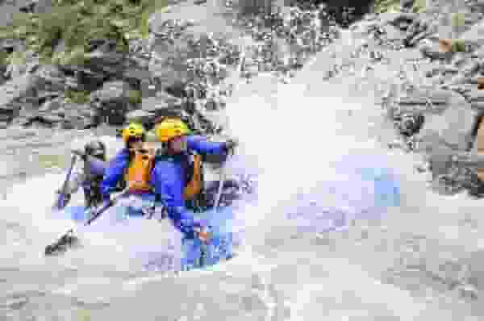
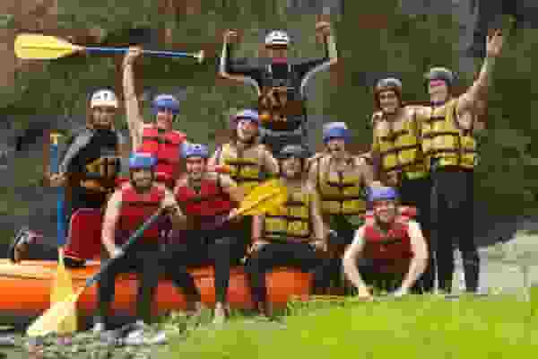
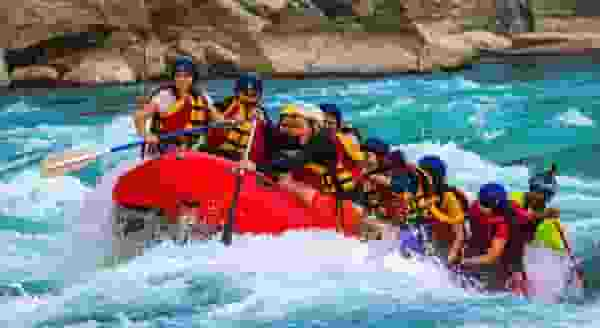

The Grand Canyon

This is a massive, powerful river with a heavy, silt-laden flow that has carved
deep into the
earth. The water is surprisingly cold because it comes from the bottom of the Glen
Canyon Dam. It
transitions between vast, flat, glassy stretches reflecting towering stone walls and
sudden,
explosive, violent rapids with massive wave trains that can swallow large rafts.
- Difficulty: Easy
- Length: 9 miles
- Price: $50
Middle Fork Salmon River

A crystal-clear, fast-moving alpine river that feels pristine and untouched. It is a
steep drop
river, meaning it flows continuously downhill over a bed of smooth river rocks,
creating non-stop,
bouncy, and technical whitewater
- Difficulty: Medium
- Length: 8 miles
- Price: $60
Futaleufú River

This river is defined by its stunning, explosive turquoise-blue color, fed by
glacial runoff. It is
an incredibly deep, high-volume river with massive, thundering hydraulics and
colossal waves. The water is cold, pristine, and wild, packed with intense, vertical
drops and swirling eddies
created by giant granite boulders.
- Difficulty: Expert
- Length: 15 miles
- Price: $70